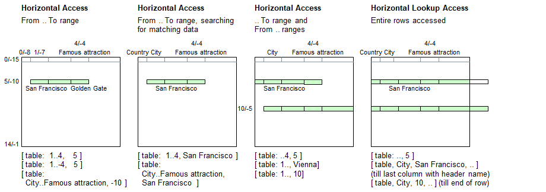

Introduction
Ranges can be specified to select multiple adjacent table columns. Ranges come in four flavors:
| From .. To | From starting header name or column number to ending header name or colum number |
| .. To | From 1st column (column 0) to ending header name or column number |
| From .. | From starting header name or column number to last column in table with header name |
| .. | From 1st column (column 0) to last column in table with header name |
| (blank) | From 1st column (column 0) to last existing column in the current table row (ignoring the header row) |
In all cases, the data read will be in sets, even if no or only 1 cell has been accessed.
Syntax for Full Table Specification
The table must be referenced inside brackets using a combination of strings and/or numerals and/or sets. These may be constant strings and numbers or expressions providing strings and numerals or sets.
| [ | Table Name | : | Range Column Specifier | , | Simple Row Specifier | ] |
|---|---|---|---|---|---|---|
| Must be a string | - Starting .. Ending column | - Matching contents (string), or | ||||
| - .. Ending column | - Positive row number, or | |||||
| - Starting column .. | - Negative row number | |||||
| - .. or (blank) |
Syntax for lookup access (Choose column, followed by the row, and pick up data from a different column):
| [ | Table Name | : | Simple Column Specifier | , | Simple Row Specifier | , | Range Column Specifier 2 | ] |
|---|---|---|---|---|---|---|---|---|
| Must be a string | - Header name, or | - Matching contents (string), or | - Starting .. Ending column | |||||
| - Positive column number, or | - Positive row number, or | - .. Ending column | ||||||
| - Negative column number | - Negative row number | - Starting column .. | ||||||
| - .. or left blank |
Lookup access: If a set is encountered in the Simple Column Specifier instead of a simple value (string or numeral), then the 1st parameter element will be used identifying the row. If it contains no elements, then no lookup can be made and an empty set will be returned.
Principle

Programming examples
table load( table, "Examples\Cities.csv");
echo( [ table: 1..4, 5 ] );
echo( [ table: 1..-4, 5 ] );
echo( [ table: City..Famous attraction, -10 ] );
echo( [ table: 4..1, 5 ] ); // Empty set returned (ending column is left of starting column)
echo;
echo( [ table: 1..4, San Francisco ] );
echo( [ table: City..Famous attraction, San Francisco ] );
echo;
echo( [ table: ..4, 5 ] ); // San Francisco
echo( [ table: City, San Francisco, ..4 ]); //
echo;
echo( [ table: 1.., Vienna] ); // Vienna
echo( [ table: City, Vienna, City..] );
echo( [ table: City.., Vienna] );
echo( [ table: 1.., 10] );
echo;
[table:table row width(table, 0)..,5] = {"Sightseeing boat","RV"}; // Append 2 vehicles
echo( [ table: .., 5 ] ); // San Francisco
echo( [ table: , 5 ] ); // San Francisco inclduing the boat & RV
echo( [ table: City, San Francisco, .. ] ); // Without the boat
echo( [ table: City, San Francisco, ] ); // With the boat & RVOutput - Staying in San Francisco
{'San Francisco','California',805000,'Golden Gate'}
{'San Francisco','California',805000,'Golden Gate'}
{'San Francisco','California',805000,'Golden Gate'}
{}
{'San Francisco','California',805000,'Golden Gate'}
{'San Francisco','California',805000,'Golden Gate'}
{'USA','San Francisco','California',805000,'Golden Gate'}
{'USA','San Francisco','California',805000,'Golden Gate'}
{'Vienna','',1800000,'Prater','','Opera','Fiacre'}
{'Vienna','',1800000,'Prater','','Opera','Fiacre'}
{'Vienna','',1800000,'Prater','','Opera','Fiacre'}
{'Vienna','',1800000,'Prater','','Opera','Fiacre'}
{'USA','San Francisco','California',805000,'Golden Gate',16,'SFMOMA','Cable car'}
{'USA','San Francisco','California',805000,'Golden Gate',16,'SFMOMA','Cable car','Sightseeing boat','RV'}
{'USA','San Francisco','California',805000,'Golden Gate',16,'SFMOMA','Cable car'}
{'USA','San Francisco','California',805000,'Golden Gate',16,'SFMOMA','Cable car','Sightseeing boat','RV'}